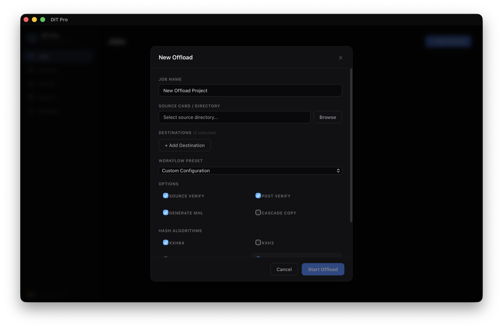

// current build
// data integrity
Every byte matters on set. DIT Pro is built around four non-negotiable safety dimensions that protect your footage from card to archive.
Every file operation is atomic. Partial writes never corrupt your destination — if it fails, it rolls back cleanly.
Power loss? Drive disconnected? Resume exactly where you left off with persistent checkpoint state.
Industry-standard chain-of-custody. Every generation is sealed and traceable from set to post.
XXH3 for speed, MD5 for compatibility. Dual-hash verification ensures nothing slips through.
// capabilities
From 6AM call times to overnight data wrangling — DIT Pro combines a clear GUI with reliable automation so you don't have to guess.
Prioritize the fastest SSD first to free up your card reader, then async-sync to shuttle drives in the background.
Per-file and per-destination progress tracking with speed metrics and ETA. Always know where you stand.
Full English and Chinese interface. Switch seamlessly — your entire team stays on the same page.
Re-validate any past offload against its sealed ASC MHL chain. Catch silent corruption months after wrap — not the day before delivery.
Every byte read, every hash computed, every checkpoint logged. Export the full offload trail as production paperwork.
Save your multi-camera setup once, recall it instantly. Same destinations, same hash config, zero re-entry.
// architecture

Native performance with minimal resource footprint. Rust's memory safety guarantees mean zero data corruption from runtime errors.
Type-safe frontend with purpose-built views. Every interaction is designed for speed and clarity under pressure.
Local-first schema covering jobs, files, checkpoints, MHL generations, and comprehensive audit trails.
Optimized for M-series chips. Maximum throughput on the hardware DIT workstations actually use.
// feedback
Choose a channel below to report issues or share product feedback.
Built as an open-source tool for production teams that need dependable data safety. v1.2.0 is available now.